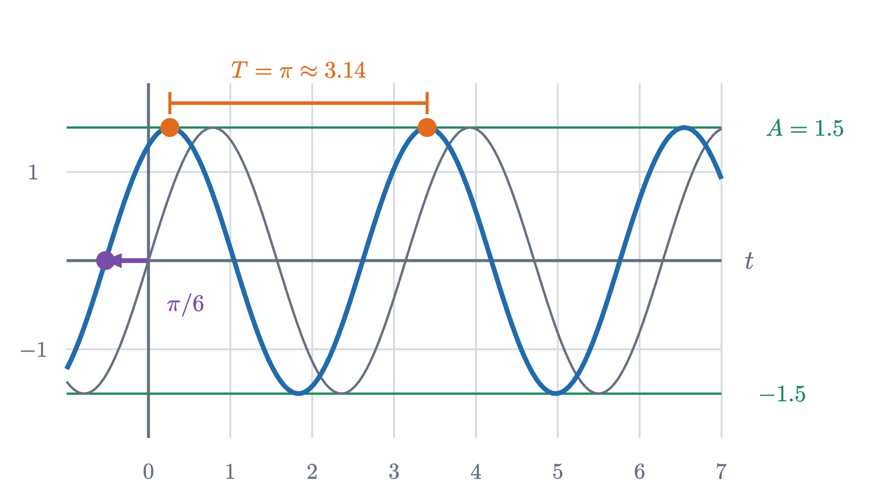
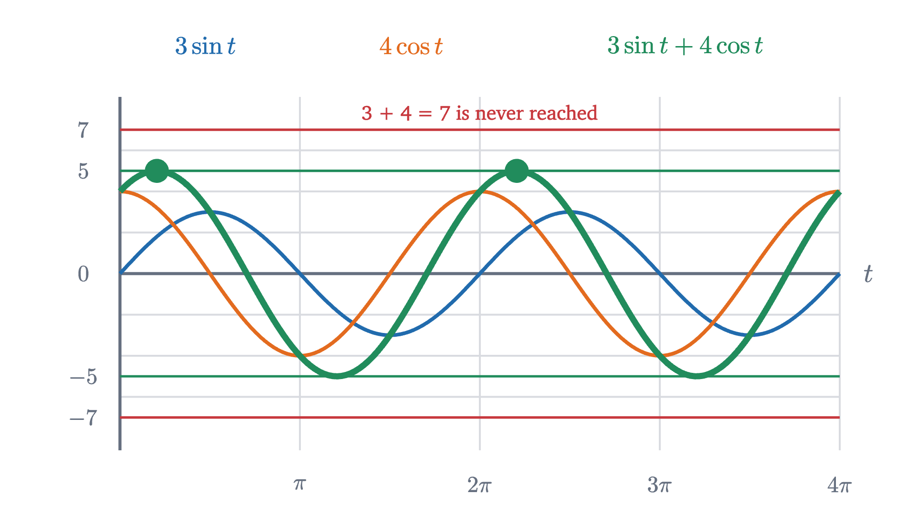

Sine waves: amplitude, frequency and phase
A sine wave is the height of a point on a turning wheel. Amplitude, frequency and phase change the wheel, and explain how two waves add, cancel or beat.
AssumesThe unit circle: sine and cosine as coordinatesRadians: measuring an angle by the arc it cutsAngle addition formulas: sin(a + b) from one picture
Hang a weight on a spring, pull it down a little and let go. It bobs up and down, quickly through the middle and slowly near the top and bottom. Now look at a turning wheel edge-on, so that a peg on its rim seems only to rise and fall. The two motions match, moment for moment.
That they match is a fact of physics, which we use here without proof: a spring pulls back with a force proportional to its stretch, and working out the resulting motion takes calculus and the derivative of sine. The physics lesson on simple harmonic motion gives the argument. It is the reason one particular curve keeps turning up, in springs and pendulums, in the pressure of a sound, in the voltage at a wall socket. All of them are, to a good approximation, the height of a point going around a circle.
So the wheel is worth understanding thoroughly, and it raises two questions. What are all the curves a wheel can draw? And what happens when two of them are added, as when two notes sound at once? The second question has more than one answer: the sum can be stronger than either wave, or nothing at all, or a slow throbbing.
The height of a point on a turning wheel
Recall the two facts this rests on. Turning the point $(1, 0)$ about the origin through an angle $\theta$ brings it to $(\cos\theta, \sin\theta)$, so the height of a point on a wheel of radius 1 is the sine of the angle it has turned through. And angles here are measured in radians: the angle is the length of arc traveled on a circle of radius 1, so a full turn is $2\pi \approx 6.28$ radians.
Let the wheel have radius 1 and turn at a steady 1 radian per second, with the peg starting at the rightmost point. After $t$ seconds it has turned through $t$ radians, so its height is
The peg is back where it started after $2\pi$ seconds, and the graph repeats from there. This is the curve in the animation, and every other curve below is a modification of it.
Three ways to change the wheel
A wheel can differ from that one in three ways: it can be a different size, it can turn at a different rate, and the peg can start somewhere else.
Pause and try
Before stepping through the figure, sketch $y = \sin t$ for $0 \le t \le 2\pi$, and on the same axes sketch your predictions for $y = 2\sin t$ and $y = \sin 2t$. Where does each one cross zero, and how high does it get?
Show answerHide answer
$2\sin t$ doubles every height: it crosses zero where $\sin t$ does, at $0$, $\pi$ and $2\pi$, and reaches $2$ and $-2$. For $\sin 2t$ the angle is $2t$, so everything happens twice as soon: it crosses zero at $0, \frac{\pi}{2}, \pi, \frac{3\pi}{2}, 2\pi$ and completes two full waves, still reaching only $1$ and $-1$. The first is a bigger wheel and the second is a faster one.
Each change to the wheel is one change to the formula. A wheel of radius $A$ multiplies the height by $A$. A wheel turning at $\omega$ radians per second (the Greek letter omega) has turned through $\omega t$ after $t$ seconds. A peg that starts at the angle $\varphi$ (phi) instead of 0 is at the angle $\omega t + \varphi$. Putting the three together, the height of the peg is $A\sin(\omega t + \varphi)$.
The general sine wave
On the wheel, $A$ is the radius, $\omega$ is the turning rate, $\varphi$ is the angle of the peg at time zero, $T$ is the time for one turn and $f$ is the number of turns per second. The cosine is included, since $\cos x = \sin\left(x + \frac{\pi}{2}\right)$: a cosine wave is a sine wave whose peg starts at the top.
Here is one specific wave with its three numbers marked.

The period is what the definition says it should be.
The phase needs the most care. Factor the angle: $\omega t + \varphi = \omega\left(t + \frac{\varphi}{\omega}\right)$. So $A\sin(\omega t + \varphi)$ takes at time $t$ the value that $A\sin\omega t$ will not take until $\frac{\varphi}{\omega}$ later. A positive phase makes everything happen earlier, by the time $\frac{\varphi}{\omega}$, and on a graph earlier is to the left.
Pause and try
For the wave in the figure, $y = 1.5\sin\left(2t + \frac{\pi}{3}\right)$, find the first time after $t = 0$ at which $y$ reaches its peak, and the value of $y$ at $t = 0$.
Show answerHide answer
A peak needs the angle to be $\frac{\pi}{2}$ (plus full turns): $2t + \frac{\pi}{3} = \frac{\pi}{2}$ gives $2t = \frac{\pi}{6}$, so $t = \frac{\pi}{12} \approx 0.26$ seconds. That is the first dot in the figure. At $t = 0$, $y = 1.5\sin\frac{\pi}{3} = 1.5 \times \frac{\sqrt 3}{2} \approx 1.30$. The wave starts most of the way up, because its peg begins a sixth of a turn above the starting line.
Adding two waves of the same frequency
Now the second question. Take two wheels turning at the same rate, and add the heights of their pegs. To have numbers, let one wave be $3\sin t$ and the other $4\cos t$.
Pause and try
What is the largest value that $3\sin t + 4\cos t$ ever takes? Compute it at $t = 0$, $t = \frac{\pi}{4}$ and $t = \frac{\pi}{2}$ and make a guess. Can it be 7?
Show answerHide answer
At $t = 0$ the sum is $0 + 4 = 4$. At $t = \frac{\pi}{2}$ it is $3 + 0 = 3$. At $t = \frac{\pi}{4}$ it is $(3 + 4) \times \frac{\sqrt 2}{2} \approx 4.95$. It cannot be 7, because that needs $\sin t = 1$ and $\cos t = 1$ at the same moment, and $\sin^2 t + \cos^2 t = 1$ forbids it. The true maximum is 5, as we are about to see.

The sum looks like a single sine wave of amplitude 5, shifted a little. The wheel explains why.
The term $3\sin t$ is the height of the tip of an arrow of length 3 that points in the direction $t$ and so turns steadily. The term $4\cos t = 4\sin\left(t + \frac{\pi}{2}\right)$ is the height of the tip of an arrow of length 4 that is always a quarter turn ahead. Place the second arrow at the tip of the first. Heights add when arrows are placed tip to tail, so the height of the far end is $3\sin t + 4\cos t$. And because both arrows turn at the same rate, the right angle between them never changes: the two arrows and the line that closes the triangle turn together as one rigid shape.
The closing side is the hypotenuse of a right triangle with legs 3 and 4, so its length is $\sqrt{3^2 + 4^2} = 5$. It points ahead of the first arrow by the fixed angle $\varphi$ of that triangle, with $\cos\varphi = \frac{3}{5}$ and $\sin\varphi = \frac{4}{5}$, which makes $\varphi \approx 0.927$ radians. So the sum is the height of one arrow of length 5 turning at the same rate:
The picture used positive lengths 3 and 4. The statement is true for any coefficients, and the angle addition formula $\sin(x + \varphi) = \sin x\cos\varphi + \cos x\sin\varphi$ proves it in a few lines.
The first sentence of that summary claims more than the theorem, so here is why it holds. Any wave $A\sin(\omega t + \psi)$ expands by angle addition to $(A\cos\psi)\sin\omega t + (A\sin\psi)\cos\omega t$, a combination of $\sin\omega t$ and $\cos\omega t$. The sum of two such waves is another combination $a\sin\omega t + b\cos\omega t$, and the theorem with $x = \omega t$ turns it back into a single wave. If $a$ and $b$ both come out zero the sum is zero, and the waves have canceled.
How strongly the phase difference matters is clearest when the two amplitudes are equal.
In step, the peaks coincide and the sum is twice as large. Half a turn apart, each peak of one meets a trough of the other and the sum is zero at every instant, which is how noise-canceling headphones work and how two ripples can cancel. In between, the amplitude is the length of the diagonal of the rhombus in the figure, which a problem below asks you to compute.
Different frequencies: beats
If the two wheels turn at different rates, the triangle of arrows is no longer rigid. The faster arrow gains steadily on the slower one, so the phase gap itself keeps growing, and the pair passes again and again through “in step” and “half a turn apart”. The sum should swell and fade, over and over. Musicians know the effect: two strings tuned almost but not quite to the same note produce a slow throbbing called beats.
To describe it exactly we need the sum of two sines with different angles written as a product. Start from the angle addition formulas for a sum and a difference,
and add them. The terms $\cos u\sin v$ cancel, leaving $\sin(u + v) + \sin(u - v) = 2\sin u\cos v$. Now choose $u$ and $v$ so that $u + v = x$ and $u - v = y$, which means $u = \frac{x + y}{2}$ and $v = \frac{x - y}{2}$.
Read the second formula when $\omega_1$ and $\omega_2$ are close. The factor $\sin\left(\frac{\omega_1 + \omega_2}{2}t\right)$ oscillates at the average of the two frequencies, about as fast as either wave. The factor $2\cos\left(\frac{\omega_1 - \omega_2}{2}t\right)$ changes slowly, because the difference of the frequencies is small. So the sum is a fast wave whose amplitude is slowly driven up to 2 and down to 0 by the cosine factor, which is called the envelope.
In the figure, $\omega_1 = 2\pi \times 7$ and $\omega_2 = 2\pi \times 6$, so the formula reads $2\cos(\pi t)\sin(13\pi t)$: a 6.5 Hz wave inside the envelope $2\cos\pi t$.
Pause and try
The envelope $2\cos\pi t$ has period 2 seconds. Yet the figure shows the sum swelling once every second. Which is right, and how many beats per second would you hear from notes of 440 Hz and 444 Hz?
Show answerHide answer
Both are right. Loudness depends on the size of the envelope and not on its sign, and $|2\cos\pi t|$ is large twice in each period of the cosine: once near its positive peak and once near its negative one. So the beats come at twice the frequency of the envelope. The envelope’s frequency is half the difference of the two frequencies, and therefore the number of beats per second is the difference itself, $|f_1 - f_2|$. Here that is $7 - 6 = 1$. For 440 Hz and 444 Hz it is 4 beats per second.
Limits of these results
The single-wave theorem needs equal frequencies: $\sin t + \sin 2t$ is periodic but is not a sine wave, as a problem below shows. The beats formula needs equal amplitudes. With unequal amplitudes $A_1$ and $A_2$ the sum still swells and fades $|f_1 - f_2|$ times per second, but its size only falls to $|A_1 - A_2|$ and the waves never cancel completely. The last problem gives the formula behind this: the phase gap between the two arrows grows steadily, and the length of their sum depends on that gap.
Looking back
A sine wave is one coordinate of steady circular motion, and its three parameters are the three things that can differ between one wheel and another: radius, turning rate and starting angle. The idea that did the most work was to replace each wave by its turning arrow, so that adding waves became adding arrows tip to tail. For equal frequencies the arrows form a rigid triangle and the sum is a single wave. For unequal frequencies the triangle keeps changing shape, and the sum-to-product formula says exactly how: a fast wave at the average frequency inside a slow envelope. Both proofs were short because the angle addition formulas did the work.
Check yourself
What is the amplitude of $6\sin t + 8\cos t$?
Problems
Angles are in radians throughout. The first two repeat the lesson’s moves, the next three combine them, and the last two extend the lesson.
Problem 1
For $y = 4\sin\left(3t - \frac{\pi}{2}\right)$, with $t$ in seconds, find the amplitude, the period, the frequency, the value at $t = 0$ and the first positive time at which $y$ is at its peak.
Show solutionHide solution
The amplitude is 4 and $\omega = 3$, so the period is $\frac{2\pi}{3} \approx 2.09$ s and the frequency is $\frac{3}{2\pi} \approx 0.477$ Hz. At $t = 0$, $y = 4\sin\left(-\frac{\pi}{2}\right) = -4$, so the wave starts at its lowest point. The peak needs $3t - \frac{\pi}{2} = \frac{\pi}{2}$, so $t = \frac{\pi}{3} \approx 1.05$ s. That is half a period after the trough at $t = 0$, as it should be.
Problem 2
Write $5\sin t + 12\cos t$ as a single sine wave. What are its largest and smallest values, and when does it first reach the largest for $t > 0$?
Show solutionHide solution
$R = \sqrt{25 + 144} = 13$, with $\cos\varphi = \frac{5}{13}$ and $\sin\varphi = \frac{12}{13}$. Both are positive, so $\varphi$ is in the first quadrant: $\varphi = \tan^{-1}\frac{12}{5} \approx 1.176$. So $5\sin t + 12\cos t = 13\sin(t + 1.176)$, with largest value 13 and smallest $-13$. The first peak is at $t + \varphi = \frac{\pi}{2}$, that is, $t \approx 1.571 - 1.176 = 0.395$. Check: at that time $\sin t = \cos\varphi = \frac{5}{13}$ and $\cos t = \sin\varphi = \frac{12}{13}$, so the sum is $\frac{25}{13} + \frac{144}{13} = 13$.
Problem 3
Solve $\sin t + \cos t = 1$ for $0 \le t < 2\pi$ by first writing the left side as a single sine wave.
Show solutionHide solution
With $a = b = 1$: $R = \sqrt 2$ and $\cos\varphi = \sin\varphi = \frac{1}{\sqrt 2}$, so $\varphi = \frac{\pi}{4}$. The equation becomes $\sqrt 2\sin\left(t + \frac{\pi}{4}\right) = 1$, or $\sin\left(t + \frac{\pi}{4}\right) = \frac{1}{\sqrt 2}$. The angles with that sine are $\frac{\pi}{4}$ and $\frac{3\pi}{4}$, plus full turns. So $t + \frac{\pi}{4} = \frac{\pi}{4}$ or $\frac{3\pi}{4}$, giving $t = 0$ or $t = \frac{\pi}{2}$. Adding full turns gives nothing else in the range. Check: $0 + 1 = 1$ and $1 + 0 = 1$. This is quicker than squaring both sides, and it produces no false solutions.
Problem 4
(a) Use the sum-to-product formula to show that $\sin t + \sin(t + \delta) = 2\cos\frac{\delta}{2}\,\sin\left(t + \frac{\delta}{2}\right)$, so that the sum has amplitude $2\left|\cos\frac{\delta}{2}\right|$. (b) For which phase gap $\delta$ between 0 and $\pi$ does the sum have amplitude exactly 1? (c) Show that $\sin t + \sin\left(t + \frac{2\pi}{3}\right) + \sin\left(t + \frac{4\pi}{3}\right) = 0$ for every $t$.
Show solutionHide solution
(a) Take $x = t + \delta$ and $y = t$. Then $\frac{x + y}{2} = t + \frac{\delta}{2}$ and $\frac{x - y}{2} = \frac{\delta}{2}$, and the formula gives $2\sin\left(t + \frac{\delta}{2}\right)\cos\frac{\delta}{2}$. As $t$ varies the sine factor runs between $-1$ and $1$, so the amplitude is $2\left|\cos\frac{\delta}{2}\right|$. It is 2 at $\delta = 0$ and 0 at $\delta = \pi$, as in the animation. (b) $2\cos\frac{\delta}{2} = 1$ gives $\cos\frac{\delta}{2} = \frac{1}{2}$, so $\frac{\delta}{2} = \frac{\pi}{3}$ and $\delta = \frac{2\pi}{3}$, a third of a turn. (c) By (a) with $\delta = \frac{2\pi}{3}$, the first two terms add to $2\cos\frac{\pi}{3}\sin\left(t + \frac{\pi}{3}\right) = \sin\left(t + \frac{\pi}{3}\right)$. The third term is $\sin\left(t + \frac{\pi}{3} + \pi\right) = -\sin\left(t + \frac{\pi}{3}\right)$, since adding half a turn reverses the sign of a sine. The total is zero. Three equal arrows a third of a turn apart close up into a triangle, which is the principle behind three-phase electrical power.
Problem 5
A piano tuner sounds a string together with a 440 Hz tuning fork and hears 3 beats per second. (a) What are the possible frequencies of the string? (b) She tightens the string slightly, which raises its frequency, and the beats slow to 1 per second. What was the string’s original frequency?
Show solutionHide solution
(a) The number of beats per second is the difference of the two frequencies, so the string is at $440 - 3 = 437$ Hz or $440 + 3 = 443$ Hz. Beats alone cannot tell which. (b) Raising the frequency brought it closer to 440 Hz, since the beat rate fell. A string at 443 Hz would have moved further away and beaten faster. So the string was at 437 Hz, and is now at 439 Hz.
Problem 6
Show that $g(t) = \sin t + \sin 2t$ is not a sine wave, by finding its zeros in $0 \le t < 2\pi$ and comparing them with the zeros of a function $A\sin(\omega t + \varphi)$.
Show solutionHide solution
By the double angle formula, $\sin 2t = 2\sin t\cos t$, so $g(t) = \sin t\,(1 + 2\cos t)$. This is zero when $\sin t = 0$, at $t = 0$ and $t = \pi$, or when $\cos t = -\frac{1}{2}$, at $t = \frac{2\pi}{3}$ and $t = \frac{4\pi}{3}$. The zeros in order are $0, \frac{2\pi}{3}, \pi, \frac{4\pi}{3}$, with gaps $\frac{2\pi}{3}, \frac{\pi}{3}, \frac{\pi}{3}$ and then $\frac{2\pi}{3}$ to the next zero at $2\pi$. A sine wave $A\sin(\omega t + \varphi)$ is zero exactly when $\omega t + \varphi$ is a multiple of $\pi$, so its zeros are evenly spaced, $\frac{\pi}{\omega}$ apart. The zeros of $g$ are not evenly spaced, so $g$ is not a sine wave. The theorem on adding waves needed equal frequencies, and this shows the hypothesis cannot be dropped.
Problem 7
Two waves of the same angular frequency have amplitudes $A_1$, $A_2$ and phases $\varphi_1$, $\varphi_2$. (a) Show that their sum $A_1\sin(\omega t + \varphi_1) + A_2\sin(\omega t + \varphi_2)$ has amplitude $R$ with
(b) For which phase differences is $R$ largest and smallest, and what are those values? (c) Which theorem about triangles is this?
Show solutionHide solution
(a) Expand each wave by angle addition. The sum is $a\sin\omega t + b\cos\omega t$ with $a = A_1\cos\varphi_1 + A_2\cos\varphi_2$ and $b = A_1\sin\varphi_1 + A_2\sin\varphi_2$. By the theorem, $R^2 = a^2 + b^2$. Squaring and adding, the terms $A_1^2\cos^2\varphi_1 + A_1^2\sin^2\varphi_1$ give $A_1^2$, likewise $A_2^2$, and the cross terms are $2A_1A_2(\cos\varphi_1\cos\varphi_2 + \sin\varphi_1\sin\varphi_2) = 2A_1A_2\cos(\varphi_1 - \varphi_2)$, by the formula for the cosine of a difference.
(b) $R$ is largest when $\cos(\varphi_1 - \varphi_2) = 1$, that is, when the waves are in step: $R^2 = (A_1 + A_2)^2$, so $R = A_1 + A_2$. It is smallest when the cosine is $-1$, half a turn apart: $R = |A_1 - A_2|$. For $3$ and $4$ a quarter turn apart the cosine is 0 and $R = 5$.
(c) It is the law of cosines. Place the arrows of lengths $A_1$ and $A_2$ tip to tail. The angle between their directions is $\varphi_1 - \varphi_2$, so the angle inside the triangle, at the joint, is $\pi$ minus that, and $R$ is the third side: $R^2 = A_1^2 + A_2^2 - 2A_1A_2\cos\bigl(\pi - (\varphi_1 - \varphi_2)\bigr)$. Since $\cos(\pi - \theta) = -\cos\theta$, this is the formula in (a).